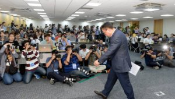

01-23 14:00편집
'갤노트7' 발화 사태 일단락…153일간의 기록

삼성전자가 23일 갤럭시노트7 발화 원인을 배터리 자체 결함이라고 규명하며 `갤노트7 발화 사태`에 종지부를 찍었다. 갤럭시노트7이 첫선을 보인 것은 지난해 8월 2일(현지...
- 세계 TV 시장, 양보다 질…대형화, 고급화 뚜렷
- (2보)삼성 “갤노트7 발화 원인은 배터리 자체 결함”
- 폭스콘, 美에 70억달러 투자 디스플레이 공장설립
- 폴리실리콘값 16달러↑, OCI·한화케미칼 볕든다
- KT, 세계 최초 100% SDN 구축
- 네패스, 사람 뇌 구조 'AI 구현 칩' 만든다
- 권혁빈회장 최근 관심사? “샌드박스 게임 개척이죠”
- 현대카드 증강현실앱 '조커' 써보니…혜택이 '와르르'
- 화학약품 기준 초과 제품, 오픈마켓서 버젓이 판매